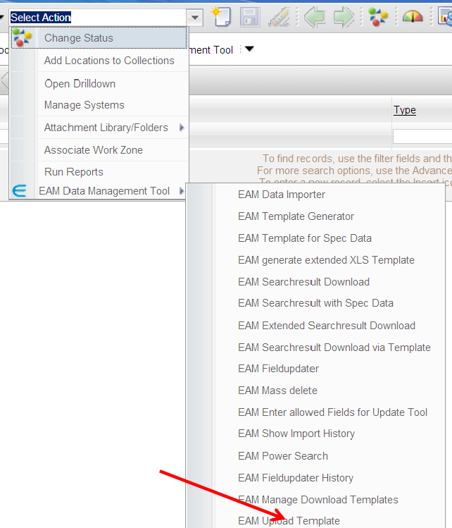
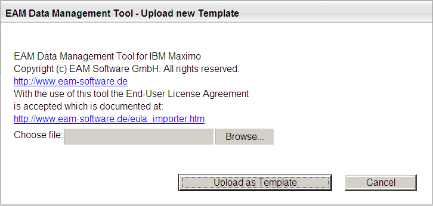
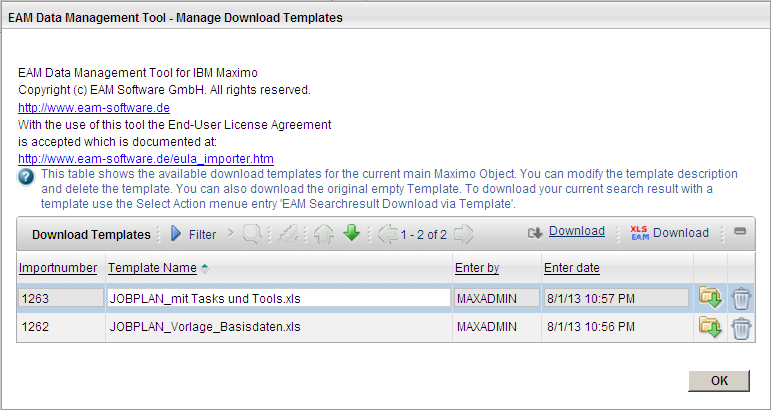
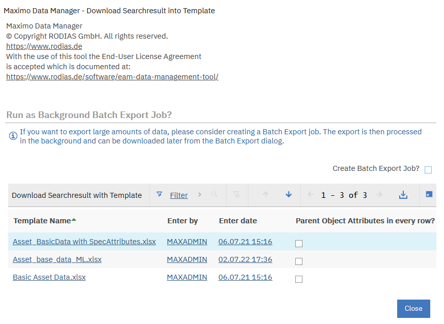
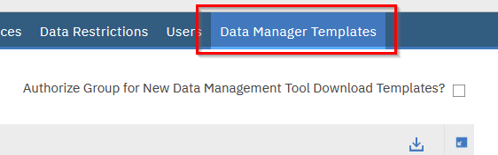
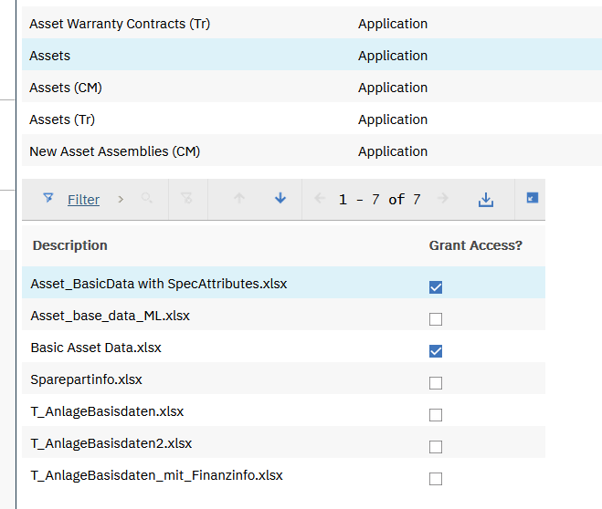

EAM Data Management Tool - Download Templates
The download of search results (either simple, extended or specification download) includes nearly all attributes of the Maximo object in the generated Excel file. This has some drawbacks:
- A lot of columns are used with data which often is not required. You may hit the 256 column limit of the older XLS file format.
- Depending on how many rows your result set contains and on how many attribute s are to be exported, the application server will address more or less memory.
To resolve these drawbacks it is now possible to upload templates into Maximo where you can specify exactly which attributes in which order you want to export. A template is ag ain a Excel file and has the same structure and layout like an import file. The template module in maximex allows you to:
- Upload a new Template into Maximo and assign it to the appropriate Maximo application
- Manage your Templates for t he current Maximo application (rename, delete, download)
- Apply a template to the current search results This functionality is very useful for simple exporting or reporting tasks where you need specific attributes in specific columns. Your templates may al so include some macros or VBA code which processes the exported data, generates consolidated reports, creates diagrams, and so on.
The main advantages of this new functions are:
- Only those attributes are included in the XLS file which are really needed. Th e created Excel documents are smaller and easier to handle and are better suited for re import back into Maximo.
- The resource consumption on the application server is reduced (both time and memory)
- Your download templates can include additional worksheets which can contain macros, diagrams,
Especially the fact that additional worksheets are allowed and preserved in download templates gives you great flexibility. Those additional worksheets can do some calculations with the raw data, create accumulated data or pivot tables or create some diagrams for a graphical representation of your data. Additional worksheets could also be optimized for printing and macros can automatically recalculate some data when the excel document is opened. The template download fea ture can be used for simple reporting tasks.
Create a Template
Templates are essentially Excel import files without any import data. Below are some rules and guidelines for the templates:
- Templates can either be in the older XLS or the newer XLSX or XLSM f ile format.
- The worksheets inside of the template must conform to the naming convention for the corresponding import mode.
- "Other" worksheets (worksheet names not starting with Simple or Extended_) remain untouched and are still available in the final result.
- Macros or VBA code is also preserved.
- Any available data rows in the template will be deleted when the template is used to download a search result.
- For specification templates: you can specify the attributes for the main object as expected. However, you can not define which specification attributes should be included in the export.
- Use a unique and meaningful file name for your template.
Upload Template
Before you can use a template to download search results, Maximo must know about
the template. You have to upload your template once into the application where you
later want to use the download template. For one specific Maximo application you can
upload any number of download template (with different content for different
purposes).
To upload a new Template into your application open the list view of your Maximo
application and select the entry "EAM Upload Template" from the Select Action menu
(see Illustration 33: Select Action menu item EAM Upload Template).

Illustration 33: Select Action menu item EAM Upload Template
Upload Template is a new Action Menu item and opens the following dialog:

Illustration 34: Upload new Template dialog
Select your template from the file system and click "Upload as Template".
Manage Template
The Select Action menu entry "EAM Manage Download Templates" opens the following dialog:
 Illustration 35: Manage Download Templates dialog
Within this dialog you can:
- Change the template name (by simply modifying the attribute Template Name in the dialog). The template name is used as a part of the file name
- Download the template from the server to your client. You could then view the current contents of your template (which attributes are in the template and at which position). You could make changes to the template and upload it again.
- Delete the template.
Search result Download via Template
Once you have selected the data in the list view you can open the following dialog with the Select Action Menu item "EAM Download Searchresult via Template":
 Illustration 36: Download Searchresult into Template - Apply Template
The dialog shows the templates which where previously uploaded and assigned to the current Maximo application along with the creation date and the name of the user
who imported the template. Here you can also see templates uploaded by other users
and use them.
If your download template contains worksheet for extended data (main
object separation column child object) and you want the main object attributes filled in in
every row for the child object than check the checkbox.
Select the template you want to use by clicking on the template name. The current
search result will be inserted into the template and the final Excel result file is sent to
your browser.
The filename of the final XLS file will be consisting of the filename of the template and
the current timestamp appended behind.
Template Security
With the default setting of the data manager all users (who can download into a
download template) can see all the available download templates suitable for the
current application . This is usually no issue if only the administrator or power users
are using the tool.
If regular users (from different security groups and with different roles) are using the
template download feature, it is useful that you can configure the visibility of the
download templates.
To enable the template security feature, you set the Maximo system property
EAM.TemplateSecurity.Enabled " to 1. Once this feature is enabled users can only see
download templates where access was granted. This flag also displays a new tab with
the name "Data Manager Templates" in the Security Groups application.

Select the application in the first table. The second table then shows all download
templates suitable for the application. Here you can grant the access to the download
templates for the current security group.
The top right of the tab contains a checkbox with the label " Authorize Group for New
Data Management Tool Download Templates?". If you set this checkbox, then new
download templates are automatically authorized for this user group.
